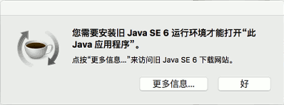

Given the Unix heritage of Mac OS X, the PL/Java build instructions apply with few differences. After installing a suitably recent Java Development Kit (JDK, not just JRE) from Oracle, a quick
mvn -version
should confirm that it is installed, and is the version of Java that Maven will use in the build.
As discussed here. On El Capitan, OpenSSL will have to be built, or installed from MacPorts or Homebrew.
If PostgreSQL itself was installed from MacPorts or Homebrew, current package listings for both systems suggest that OpenSSL should have been installed as a dependency. That should be checked if PL/Java fails to compile.
Homebrew, it seems, will install the OpenSSL headers, but in a nonstandard place. If so, for now, edit pljava-so/pom.xml, find the <c> compiler <includePaths> section, and add another <includePath> for the nonstandard location of the OpenSSL headers. See issue 94 for more.
On OS X, the shared object file that results from the build will have a name that ends in .bundle. Because .bundle is not a suffix the PostgreSQL LOAD command automatically tries, it must be spelled out in full:
LOAD 'libpljava-so-1.5.0-BETA3.bundle';
As always, unless the file is installed in $libdir or in one of the directories named in dynamic_library_path, then the LOAD command must also be given the path to the file.
Apple’s Java framework allows Java installations to be selectively enabled for five different types of task: Applets, WebStart, BundledApp, JNI, and CommandLine, as documented for Apple’s java_home tool.
Some procedures have been posted for editing an Info.plist file after installing Oracle’s Java to enable it for additional task types. Nothing of the sort is needed for PL/Java, because PL/Java does not use the Apple Java framework to locate the Java runtime. Instead, you simply set PostgreSQL’s pljava.libjvm_location variable to identify the exact Java dynamic library that PL/Java will use.
For example, if the mvn -v shows “Java home” to be
/Library/Java/JavaVirtualMachines/jdk1.8.0_65.jdk/Contents/Home/jre
then you will probably set pljava.libjvm_location so:
SET pljava.libjvm_location TO '/Library/Java/JavaVirtualMachines/jdk1.8.0_65.jdk/Contents/Home/jre/lib/jli/libjli.dylib`;
Note that on Mac OS X, the variable should point to a libjli.dylib file if it is available (Java 7 and later), not to a libjvm.dylib as you would otherwise expect. See No Java runtime present below for details.
On OS X, it seems the -Pwnosign Maven build option does not succeed in suppressing the many useless sign-conversion warnings, so if the build does fail, it can be difficult to find the real problem because of so many surrounding messages. One technique is to direct the mvn -X -Dnar.cores=1 clean install output into a file, then search that file for the strings fatal error or error generated.
In Java 7 and later, there should be a libjli.dylib as well as a libjvm.dylib. The recommended setting for pljava.libjvm_location (despite the name!) is the path to the libjli.dylib file.
If it points to the libjvm.dylib file as you would naturally expect, loading of PL/Java may cause the backend process to exit with a No Java runtime present, requesting install message, or a graphical dialog proposing to download and install Java 6.

See OS X El Capitan “Java 6” dialog when … referencing Java 8 for background.